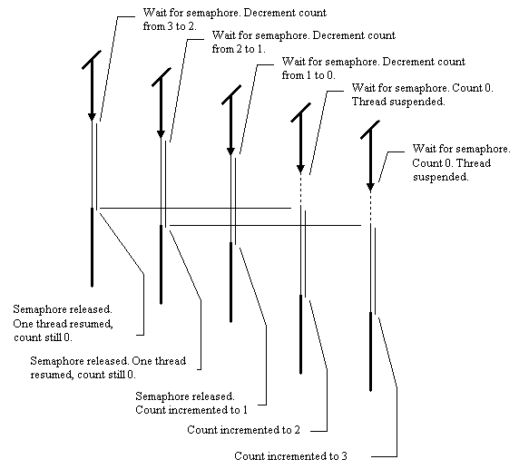
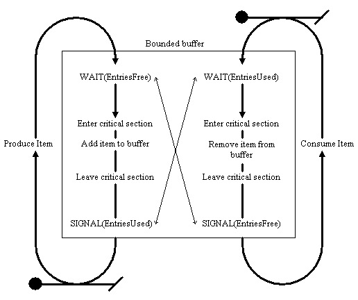

Chapter 9. Semaphores. Data flow scheduling. The producer - consumer relationship.
In this chapter:
Semaphores.
A Semaphore is another type of synchronization primitive, which is slightly
more general than the mutex. Used in the most simple manner possible it
can be made to operate in exactly the same way as a mutex. In the general
case, it allows a program to implement more advanced synchronization behaviour.
First, let's reconsider the behaviour of mutexes. A mutex can either
be signalled or non-signalled. If it is signalled, then a wait operation
on the mutex does not block. If it is non-signalled, a wait operation on
that mutex blocks. If the mutex is non-signalled, then it is owned by a
particular thread, and hence only one thread can own the mutex at any one
time.
Semaphores can be made to act in precisely the same manner. Instead
of having the concept of ownership, a semaphore has a count. When
that count is greater than 0, the semaphore is signalled, and wait
operations on it do not block. When the count is 0, then the semaphore
is not signalled, and wait operations on it will block. A
mutex is essentially a special case of a semaphore whose count is only
0 or 1. Similarly, semaphores can be thought of as fancy mutexes which
can have more than one owner at once. The functions in the Win32 API dealing
with semaphores are very similar to those for dealing with mutexes.
-
CreateSemaphore. This function is similar to CreateMutex. Instead of a
flag indicating whether the thread creating the mutex requests initial
ownership, this function takes an argument specifying the initial count.
Creating the mutex with initial ownership is similar to creating a semaphore
with a count of 0: in both cases, any other threads waiting on the object
will block. Likewise, creating the mutex without initial ownership is similar
to creating a semaphore with a count of 1: in both cases, one and only
one other thread will not be blocked when it waits for the synchronization
object.
-
Wait Functions. The wait functions are identical in both cases. With mutexes,
a successful wait gives a thread ownership of the mutex. With semaphores,
a
successful wait decreases the count of the semaphore, or if the count is
0, it blocks the calling thread.
-
ReleaseSemaphore. This is similar to ReleaseMutex, but instead of the thread
releasing ownership of the object, ReleaseSemaphore takes an extra integer
as an argument to specify how much the count should be increased by. ReleaseSemaphore
either increases the count in the semaphore, or wakes up the appropriate
number of threads blocked on that semaphore or both.
The following table shows how code using mutexes can be converted into
code using semaphores, and the equivalencies between the two.
|
Mutexes.
|
Semaphores.
|
| MyMutex := CreateMutex(nil,FALSE,<name>); |
MySemaphore := CreateSemaphore(nil,1,1,<name>); |
| MyMutex := CreateMutex(nil,TRUE,<name>); |
MySemaphore := CreateSemaphore(nil,0,1,<name>); |
| WaitForSingleObject(MyMutex,INFINITE); |
WaitForSingleObject(MySemaphore,INFINITE); |
| ReleaseMutex(MyMutex); |
ReleaseSemaphore(MySemaphore,1); |
| CloseHandle(MyMutex); |
CloseHandle(MySemaphore); |
As a simple example, here
are the modifications required to the code presented in chapter 6, in order
to get the program to use semaphores instead of critical sections.
What about counts
above one? "Not so critical" sections.
Allowing semaphores to have counts greater than one is somewhat analogous
to allowing mutexes to have more than one owner. Thus semaphores allow
critical sections to be created which allow a certain number of threads
into one particular region of code, or access to a particular object. This
is mostly useful in situations where a shared resource consists of a number
of buffers or a number of threads, which can be utilized by other threads
in the system. Let's take a concrete example, and assume that up to three
threads can be present in a particular region of code. A semaphore is created
with initial and maximum counts of 3, assuming that no threads are present
in the critical region. The execution of five threads trying to access
the shared resource might look something like this:

This particular application of semaphores is probably not particularly
useful to Delphi programmers mainly because there are so few statically
sized structures at the application level. However, it finds considerably
more utility inside the OS, where handles, or resources such a filing system
buffers are likely to be statically allocated at boot time.
A new
use for semaphores: Data flow scheduling and Flow control.
In Chapter 6, the need for flow control when passing data between threads
was outlined. Again, in Chapter 8, this subject was alluded to when discussing
monitors. This chapter outlines an example situation where flow control
is often required: A bounded buffer with a single producer thread putting
items into the buffer, and a single consumer thread taking items out.
The bounded buffer.
The bounded buffer is representative of a simple shared data structure
which provides flow control as well as shared data. The buffer considered
here will be a simple queue: First In, First Out. It will be implemented
as a cyclic buffer, that is, it contains a fixed number of entries and
has a couple of pointers "get" and "put" to indicated where data should
be inserted and removed in the buffer. There are typically four operations
allowed on the buffer:
-
Create Buffer. The buffer and any associated synchronization mechanisms
are created and initialized.
-
Put Item. This attempts to put an item into the buffer in a thread safe
manner. If this is not possible because the buffer is full, then the thread
attempting to put an item into the buffer is blocked (suspended) until
the buffer is in a state which allows more data to be added.
-
Get Item. This attempts to get an item out of the buffer in a thread safe
manner. If this is not possible because the buffer is empty, then the thread
attempting to get an item is blocked until the buffer is in a state which
allows more data to be removed.
-
Destroy Buffer. This unblocks all threads waiting in the buffer, and destroys
the buffer.
Obviously, mutexes will be required when manipulating shared data. However,
we can use semaphores to perform the required blocking operations when
the buffer is full or empty, eliminating the need for range checking, or
even keeping a count of how many items there are in the buffer. In order
to do this a small change in mindset is required. Instead of waiting for
a semaphore and then releasing it when performing operations related to
the buffer, we use the count on a pair of semaphores to keep track of how
many entries in the buffer are empty or full. Let us call those semaphores
"EntriesFree" and "EntriesUsed".
Normally, two threads interact with the buffer. The producer (or writer)
thread attempts to put entries into the buffer, and the consumer (reader)
thread attempts to take them out, as represented in the following diagram.
A third thread (possibly the VCL thread) may intervene in order to create
and destroy the buffer.

As you can see, the reader and writer threads execute in a loop. The writer
thread produces an item, and attempts to put it into the buffer. First
the thread executes a wait on the EntriesFree semaphore. If the count on
EntriesFree is zero, then the thread will be blocked, since the buffer
is full and no data can be added to the buffer. Once it gets past this
potential wait, it adds an item to the buffer, and then signals EntriesUsed,
thus incrementing the count on Entries used, and if necessary, waking up
the consumer thread. Likewise, the consumer thread will block if the count
of EntriesUsed is 0, but when it gets round to removing an item, it will
increment the count on EntriesFree, allowing the producer thread to add
another item.
By blocking the appropriate thread whenever the buffer becomes full
or empty, this stops one or other of the threads "running away". Given
a buffer size of N, the producer thread can only be N items ahead of the
consumer thread before it will be suspended, and likewise, the consumer
thread cannot be more than N items behind. This brings several benefits:
-
One thread cannot over produce, thus avoiding the problems seen in Chapter
6, where we had the output of one thread queuing up into a list of ever
increasing size.
-
The buffer is of finite size, unlike the list based approach seen earlier,
so we can place a worst case limit on memory usage.
-
There are no "busy waits". When a thread has no work to do, it is sleeping.
This avoids situations where application writers write small loops that
do nothing but wait for more data without blocking. This is to be avoided,
as it wastes CPU time.
Just to make this absolutely clear, I'll provide an example sequence of
events. Here we have a buffer which has 4 possible entries in it, and it
is initialized so all the entries are free. Many possible execution paths
are possible, depending on the whim of the scheduler, but I will illustrate
the path where each thread executes for as long as possible before it is
suspended.
|
Reader thread action
|
Writer thread action
|
Entries free count
|
Entries used count
|
|
Thread starts
|
Thread inactive (not scheduled)
|
4
|
0
|
|
Wait(EntriesUsed) blocks. Suspended.
|
|
4
|
0
|
| |
Wait(EntriesFree) flows through
|
3
|
0
|
| |
Item Added. Signal(EntriesUsed)
|
3
|
1
|
| |
Wait(EntriesFree) flows through
|
2
|
1
|
| |
Item Added. Signal(EntriesUsed)
|
2
|
2
|
| |
Wait(EntriesFree) flows through
|
1
|
2
|
| |
Item Added. Signal(EntriesUsed)
|
1
|
3
|
| |
Wait(EntriesFree) flows through
|
0
|
3
|
| |
Item Added. Signal(EntriesUsed)
|
0
|
4
|
| |
Wait(EntriesFree) blocks. Suspended
|
0
|
4
|
|
Wait(EntriesUsed) completes
|
|
0
|
3
|
|
Item Removed. Signal(EntriesFree)
|
|
1
|
3
|
|
Wait(EntriesUsed) flows through
|
|
1
|
2
|
|
Item Removed. Signal(EntriesFree)
|
|
2
|
2
|
|
Wait(EntriesUsed) flows through
|
|
2
|
1
|
|
Item Removed. Signal(EntriesFree)
|
|
3
|
1
|
|
Wait(EntriesUsed) flows through
|
|
3
|
0
|
|
Item Removed. Signal(EntriesFree)
|
|
4
|
0
|
|
Wait(EntriesUsed) blocks. Suspended
|
|
4
|
0
|
A Delphi implementation
of the bounded buffer.
Here
is a first shot Delphi implementation of the bounded buffer. As normal,
the implementation brings up a few points which bear a mention, and it
has a few problems which will be resolved later.
-
What values should be supplied to the semaphore creation calls?
-
How long should the wait on the mutexes or critical sections be?
-
How long should the wait on the semaphores be?
-
What is the best way of cleanly destroying the buffer?
Creation:
Initializing the semaphore counts correctly.
With this implementation of the bounded buffer, the data is stored as an
array of pointers with read and write indexes into this array. To aid debugging,
I have arranged that if the buffer contains N entries, it will be
declared as full when N-1 entries have been filled. This is most
often performed with cyclic buffers where the read and write indexes are
evaluated to determine whether the buffer is full or not. If the buffer
is empty, the read and write indexes are the same. Unfortunately, this
is also the case if the buffer is absolutely full, so it is common in cyclic
buffer code to always have one entry in the cyclic buffer empty so that
these two conditions can be distinguished. In our case, since we are using
semaphores, this is not strictly necessary. However, I have kept with this
convention in order to aid debugging.
With this in mind, we can initialize the EntriesUsed semaphore to 0.
Since there are no used entries, we want reader threads to immediately
block. Given that we want the writer threads to add at most N-1
items to the buffer, we then initialize EntriesFree to N-1.
We also need to consider the maximum count allowed on the semaphores.
The procedure which destroys the buffer always performs a SIGNAL operation
upon both semaphores. So, given that when the buffer is destroyed, it might
have any number of items in it, including completely full and completely
empty, we set the maximum count to N, thus allowing one signal operation
on the semaphores given all possible buffer states.
Operation: correct wait values.
I have used mutexes instead of critical sections in this piece of software
because they allow the software developer finer control over error situations.
In addition, they also allow a time-out. The time out on wait operations
for semaphores should really be infinite; It is possible that the buffer
might remain full or empty for long periods of time, and we need the thread
that is blocked for as long as the buffer is empty. Paranoid or insecure
programmers might like a time-out of a few seconds on these primitives,
to allow for unforeseen error situations where a thread becomes blocked
permanently. I am sufficiently confident of my code to deem this unnecessary,
at least for the moment...
The time-out on the mutex is a completely different kettle of fish.
The operations inside the critical section are fast; up to N memory writes,
and provided N is set fairly small (i.e. less than millions) these operations
should not take more than 5 seconds. As an added bonus, part of the cleanup
code acquires this mutex, and instead of releasing it, closes the handle.
By setting a time-out, this ensures that threads waiting on the mutex get
unblocked, and return failure.
Destruction: Cleaning up.
By now, most readers will have deduced that clean-up operations are often
the hardest part of multithreaded programming. The bounded buffer is no
exception. The procedure ResetState performs the cleanup. The first thing
it does is check FBufInit. I have assumed that this does not require synchronized
access, since the thread that creates the buffer should also destroy it,
and since it is only written to by one thread, and all writes occur in
a critical section (at least after creation), no conflicts will occur.
The clean up routine now needs to ensure that all state is destroyed, and
that any threads currently waiting, or in the process of reading or writing
exit cleanly, reporting failure if appropriate.
The clean up first acquires the mutex for the shared data in the buffer,
and then unblocks the reader and writer thread by releasing both semaphores.
The operations are done in this order because when both semaphores are
released, the buffer state is no longer consistent: the count of the semaphores
does not agree with the contents of the buffer. By acquiring the mutex
first, we can destroy the buffer before unblocked threads get to read it.
By destroying the buffer, and setting FBufInit to false, we can ensure
that unblocked threads return failure, instead of operating on garbage
data.
We then unblock both threads by releasing both semaphores, and we then
close all the synchronization handles. We then destroy the mutex without
releasing it. This is OK, because since all wait operations on the mutex
time out, we can be sure that both reader and writer threads will unblock
eventually. In addition, since there is only one reader and writer thread,
we can guarantee that no other threads have attempted to wait on the semaphores
during this process. This means that one signal operation on both semaphores
was sufficient to wake all the threads up, and since we destroy the semaphore
handles while we have ownership of the mutex, any further write or read
operations are bound to fail when they try to wait on one of the semaphores.
Destruction: The subtleties continue.
This code is only guaranteed to work with one reader thread, one
writer thread and one control thread. Why?
If more than one reader or writer thread exists, more than one thread
might be waiting on one of the semaphores at any one time. Hence we might
not wake all the waiting readers or writers up when we reset the buffer
state. A programmer's first reaction to this might be to modify the clean
up routine to continue signalling one or other of the semaphores until
all the threads have been unblocked, by doing something like this.
Unfortunately, this is still insufficient, because one of the repeat
loops in the clean up might finish just before yet another thread
enters a read or write operation and waits upon a semaphore. Obviously
we desire some sort of atomicity, but we can't wrap the semaphore operations
in a critical section, because threads blocking on a semaphore will take
hold of the critical section, and all the threads will deadlock.
Access to synchronization
handles must be synchronized!
The next possibility might be to zero out the handle of the semaphore shortly
before "unwinding" it, by doing something like this.
(The author will be honest here, and admit that this pathetic non-solution
crossed his mind.) However, this is no better. Instead of having a
deadlock problem, we have introduced a thread conflict of a subtle kind.
This particular conflict is a write after read conflict on the handle of
a semaphore itself! Yes... you even have to synchronize your synchronization
objects! What can potentially happen is, a worker thread reads the value
of the mutex handle from the buffer object, and is suspended before making
the wait call, at which point the clean-up thread destroying the buffer
signals the mutex the required number of times, just in time for the worker
thread to be scheduled, and promptly perform a wait operation on the mutex
we thought had just been cleared! The window in which this can happen is
very small, but nonetheless, this is not an acceptable solution.
Win32 handle management.
This problem is sufficiently knotty that it's worth reviewing exactly what
happens when we issue a Win32 call to close a mutex or a semaphore. In
particular, it is useful to know:
-
Does closing the handle unblock threads waiting on that particular mutex
or semaphore?
-
In the case of mutexes, does it make any difference whether one owns the
handle when releasing the mutex?
In order to determine this, we can use two test applications, A mutex
testapp, and a semaphore
testapp. From these applications, it can be determined that when
closing a handle to a synchronization object, Win32 does not unblock any
threads waiting on that object. This is most likely a by product of
the reference counting mechanism that Win32 uses to keep track of handles:
threads waiting on a synchronization object may well keep the internal
reference count from reaching 0, and by closing the application's handle
to the object, all we do is remove any semblance of control that we had
over that synchronization object. In our situation, this is a real pain.
Ideally, when cleaning up one would hope that an attempt to wait on a closed
handle would unblock threads waiting on that synchronization object via
that particular handle. This would then allow the application programmer
to enter a critical section, clean up the data in that critical section,
and then close the handle, thus unblocking the threads waiting on it with
an appropriate error value (perhaps WAIT_ABANDONED?).
A solution.
As a result of all this, we have determined that closing handles is fine,
provided that threads do not perform an indefinite wait on the handle.
When applying this to the bounded buffer, at clean up time, we can guarantee
to unblock all threads waiting on semaphores only if we know how many threads
there are waiting on the mutexes. In the general case, we need to ensure
that threads do not perform an infinite wait on the mutexes. Here
is a rewritten buffer that copes with an arbitrary number of threads. In
it, the wait functions on the semaphores have been modified, and the clean
up routine has also undergone some small changes.
Instead of performing an infinite wait on the appropriate mutex, the
reader and writer threads now call a "Controlled Wait" function. In this
function, each of the threads waits on the semaphore for only a finite
amount of time. This wait for the semaphore can return one of three values,
as documented in the Win32 help file.
-
WAIT_OBJECT_0 (Success).
-
WAIT_ABANDONED
-
WAIT_TIMEOUT
Firstly, if the semaphore is released, the function returns success, and
no further actions are required.. Secondly, in the case where the Win32
WaitFor function returns wait abandoned, the function returns error; this
particular error value indicates that a thread has quit without properly
releasing a synchronization object. The case that we are most interested
in is where the wait times out. This can be for one of two possible reasons:
-
The thread might be blocked for a long time.
-
The internals of the buffer have been destroyed without waking up that
particular thread.
In order to check for this, we attempt to enter a critical section and
check that the buffer initialized variable is still true. If either of
these operations fail, then we know that internals of the buffer have been
reset, and the function quits, returning an error. If both these operations
succeed, then we go back round the loop, waiting on the mutex again. This
function guarantees that when the buffer is reset, blocked threads will
eventually time out, and return an error to the calling thread.
The clean up routine has also been slightly modified. It now signals
both semaphores, and releases the critical section mutex. By doing this,
it guarantees that the first reader and writer thread will be unblocked
immediately whenever the buffer state is reset. Of course, additional threads
may still have to wait for up to the default time-out specified before
quitting.
Using the bounded buffer: an
example.
In order to provide a framework for this example, a simple application
using two threads was devised. This application searches for palindromic
prime numbers. A pair of palindromic primes exist where two numbers, X
and Y are both prime, and Y is the palindrome of X.
Neither X nor Y need be a palindromic number in itself, although
if one of them is, then X = Y, a special case. Examples of palindromic
primes include: (101, 101), (131, 131), which are both special cases and
(16127, 72161) , (15737, 73751) and (15683, 38651), which are not.
In essence, the two threads (source
here) perform slightly different tasks. The first thread (the "forward"
thread) searches for prime numbers. When it finds one, it puts it into
a bounded buffer. The second thread waits of entries in the bounded buffer.
When it finds an entry, it removes the entry, reverses the digits, checks
whether the reversed number is prime, and if this is the case, it sends
a text string containing the two numbers to the main form (source
here).
Although there is quite a lot of code, there is very little new to be
discussed. The reader would be advised to have a look at the execute methods
of each thread, since these provide the clearest overview of what is happening.
The transfer of data from the second thread to the VCL thread, and corresponding
main form is as discussed in previous chapters. The one point left to make
concerns... you guessed it! Resource deallocation and clean up.
A few final points...
And you thought there couldn't possibly be anything else left to say about
destruction? There is one final caveat to be mentioned. The bounded buffer
code assumes that threads may attempt to access fields in the object after
the buffer has been reset. This is fine, but it means that when destroying
the two threads, and the buffer in between them, we must reset the buffer
state, then wait for all the threads to terminate, and only then
actually free the buffer, thus deallocating the memory containing the object
itself. Failure to do this may result in an access violation. The StopThreads
function correctly performs this, assuring a clean exit.
It is also worth noting at this point that an additional synchronisation
issue exists with the SetSize procedure. In the example, I have assumed
that the buffer size is set, once and for all, before any threads use the
buffer. It is possible for the buffer size to be set whilst it is in use.
This is generally a bad idea, since it means that if more than two threads
are using the buffer; one reader and one writer, they may not correctly
detect buffer destruction. If the buffer has to be resized, then all the
threads using the buffer should either be terminated or suspended at a
known safe point. The buffer should then be resized, and the producer and
consumer threads restarted. Ambitious programmers may wish to write an
extended version of the buffer which handles resize operations transparently.
[Contents] [Previous][Next]
© Martin Harvey
2000.